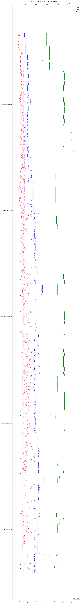

Mechanical specific energy (MSE) is the minimum energy required to drill a unit section of the rock. Higher energy consumed during drilling operation indicates inefficient operation. The reasons for increase of MSE while drilling a well section could be variation in compressive strength and hardness of rocks, bit wear or other issues related to energy loss from surface or subsurface equipment. Therefore, MSE curve generated in real time could give insights into the drilling efficiency. By applying ML on MSE curve, suitable reason for inefficiency can be found and necessary remedial measures can be taken.
